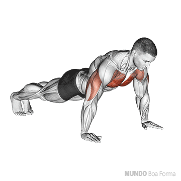
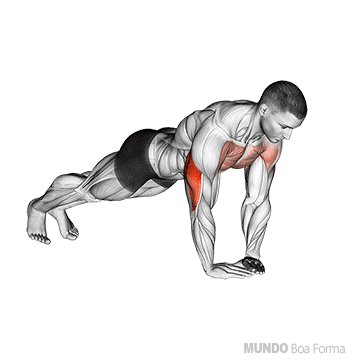
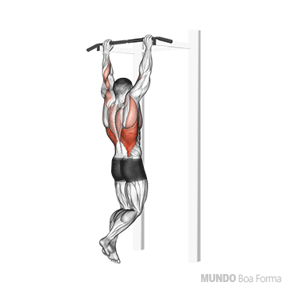
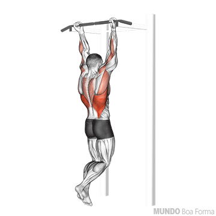
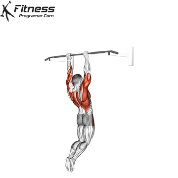

A flexão de braços é um exercício principalmente pensado para a região peitoral, pois em sua maioria os exercícios atingem essa parte do corpo, mesmo que talvez a variação e posição da mão possa alterar o músculo alvo ou o estímulo.
Alguns exemplos das variações da flexão de braços são:
FLEXÃO DE BRACOS TRADICIONAL

A flexão de braços tradicional pega principalmente a região do peitoral, além de usar também como auxiliares os músculos do tríceps e do ombro.
as variações dentro desse tipo de flexão são a altura e inclinação dos pés em relação ao tronco e a abertura das mãos. quando mais altos estão os pés mais difíl o movimento é de ser executado.
E quando maior for a distância das mãos vai ser mais fácil realizar o movimento.
FLEXÃO DIAMANTE
A flexão diamante é uma variação da flexão de braços com as mãos mais próximas
uma das outras, basicamente se encostando. Ela ativa as áreas já mencionadas como
peitoral e os músculos do tríceps, porém com mais foco nas três cabeças do tríceps:
cabeça lateral, cabeça longa e cabeça medial. A flexão diamante apresenta um nível mais
elevado de dificuldade para execução mas ainda assim pode ser feita com ajuda de alguns
treinos.

OUTRAS VARIAÇÕES:
Algumas variações para a flexão de braços podem ser feitas com algun ajustes simples na posição das mãos ou da postura.
Por exemplo, se uma flexão diamante for muito desafiadora por enquando, você pode experimentar faze-la com o apoio do joelho ao
invés de usar o apoio do pé. Caso um dia uma flexão padrão ficar muito simples, você pode tentar se inclinar, deixando o os pés cada vez mais altos até
conseguir alcançar uma parada de mão (a famosa bananeira). Essas variações podem ajudar a começar a fazer movimentos que parecem complicados, tornando-os mais
simples, leves e práticos até uma eventual subida de nível. Ainda existem outras variações mais complicadas como a flexão pike para ombros ou a flexão arqueiro.
A barra fixa é um exercício muito famoso que é feito para a ativação das dorsais como um todo. Ela não tem tantas variações como a flexão de braços por exemplo, mas mesmo permite algumas que podem ser chaves para construir costas de forma interessante usando a calistenia.
BARRA FIXA COM PEGADA PRONADA(ESQUERDA) E PEGADA SUPINADA (DIREITA)

A barra fixa com pegada pronada além de ser um dos exercícios mais completos de dorsais, também é um dos mais usados para contruir os músculos na região das costas e também um dos mais conhecidos para isso.
Ele é simples pois só é preciso de uma barra fixa em algum lugar para se pendurar e subir. Muitas vezes esse exercício é praticado em parques pois normalmente neles você consegue encontrar algumas barras que podem ser usadas para a barra fixa.
A barra fixa pega as costas como um todo, mas a pegada pronada (palmas para frente), que é a mais comum, dá ênfase ao latíssimo do dorso e trapézio. A sua variação com a pegada supinada (palmas pra trás) recruta mais o bíceps e é mais leve para iniciantes.

MUSCLE UP

O muscle up é um exercício avançado focado principalmente em força na calistenia, que combina uma barra fixa com logo em seguida uma flexão de braço na barra (mas também pode ser feito em argolas).
Ele é feito em um único movimento contínuo e isso somado com a sua variedade de movimento faz com que ele trabalhe desde o latíssimo do dorso, bíceps e até mesmo peitoral e abdômen.
Por ser um movimento mais avançado, normalmente é treinado com embalo, se balançando antes da subida para realizar o movimento mais facilmente, porém a variação estrita acontece sem esse "embalo" para ajudar no movimento.